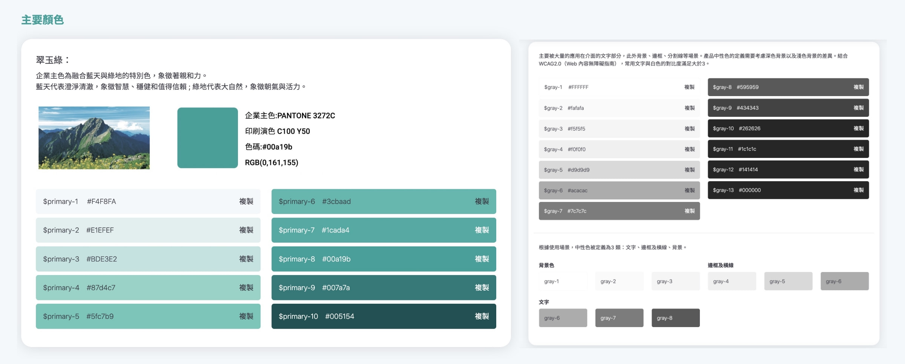

KUO YEN-HONG
UI/UX designer | Front-end engineer


-
建置全行 Design System
本次的專案的目標是從官方網站、行動銀行、個人網路銀行開始，讓顧客的體驗能夠一致化。重新定義數位產品需傳達出的價值精神，依據這個原則去檢視不同的服務，並進行元件盤點，最後將成果收納於 Designs System 的網站內，方便設計師與專案團隊取用。
- 我們可以如何提升使用者在不同平台間的體驗？
- 我們可以如何讓不同設計團隊共享設計資源？
- 我們可以如何讓不同平台的元件有共通的操作方式？
- 我們可以如何降低彼此設計團隊的溝通成本？
以上都是現階段需要改善的地方，因為有不同設計團隊，彼此執行的專案內容也不同，需要有一個共同的平台可以讓大家對標，減少電話或信件上的溝通成本。
許多服務性質的網頁透過不同設計師接手，產生多種風格，乍看之下可能不像是同一組產品的網頁。又或者同一個產品經手過不同PM，仔細觀察會發現每一個網頁元件的樣式都會有些微差異，很相似但是互動方式卻又不一致，造成體驗上的差異。 例如：A設計師需要企業色票，他可能要花時間去其他檔案搜尋正確的色號。B設計師需要製作目錄的元件，他只能重新撰寫程式碼或是沿用先前專案的元件，除了花費時間外，每次的目錄展開效果可能會不一樣。 需要一個能讓設計師共同可以取得資源、共享彼此設計，減少相同重複的工作。並且定期去維護與檢視各元件，開啟建立 Designs System 的機會。
- 元件盤點
透過 Figma 線上協作服務將三平台（官方網站、行動銀行、個人網路銀行）重新檢視，將功能相同的元件、相似的顏色、同性質的icon，放在同一個圖卡內進行整理。- 分類
參考螞蟻金服的規則，將需要分類的選項定義出來，大致分成品牌識別 （Brand）、樣式（Style）、文案（Content）、頁面規範（Guideline）、元件（Component）。- 重新設計
將盤點的內容重新排列整理，並將格線系統使用規則明確規範，顏色對比度依照 W3C 規則起碼達到4.5以上的分數（檢測等級 AA ），將元件依照設計原則重新製作，並且支援 RWD 方便尋找需要的設計資源。 將顏色分類，並加上一鍵複製方便取用在此專案擔任主要設計師的角色，與專案團隊互相討論，讓整個網站能夠順利完成。
- 依照功能劃分並使用 Figma 製作盤點圖卡，讓多名設計師能夠共同協作。
- 建立 Designs System 網站的架構，使用 Bootstrap 框架開發，方便維護與管理。
- 參與各類別的盤點整理，並將內容放置在網站內。
- 開發各元件的程式碼，方便專案成員能夠快速組合出網頁產品雛形。
- 成果與未來規劃
有參照的網站能夠取用共同資源，逐步依照建立的規則更新舊有的平台樣式，新的專案能夠使用 Designs System 的規則去開發製作，讓不同專案的樣式跟互動方式相同，使顧客可以感受到一站式的操作體驗。未來也同步規劃導入Storybook 可以直接點選觀看元件的互動形式及程式碼，讓開發人員可以即時取用。
{kind=link}
{kind=link}
{kind=link}
{kind=link}